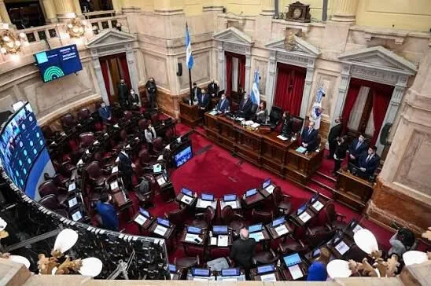
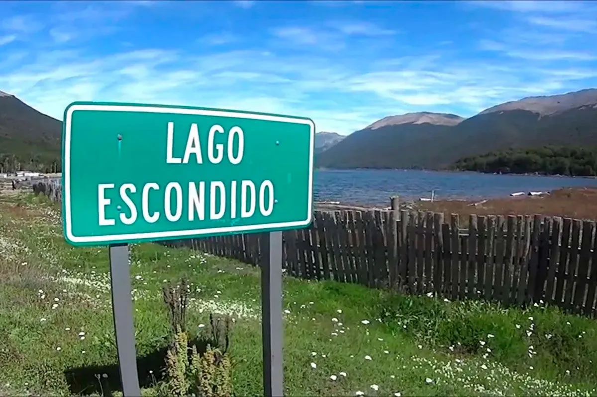

Patagonia at the Center of the Fight Over Foreign Land Sales
The back-and-forth of a law that can't get across the line: the Government pulled the land chapter hours before the Senate debate, but the rest of the bill is still standing.

Politics — GLOBALpatagonia Report
The back-and-forth of a law that won't get across the line
August 6, 2026 will go down as another chapter of back-and-forth in Congress. The ruling party arrived at the Senate intending to pass the law with the misleading name "Law on the Inviolability of Private Property," a bill the Government itself had postponed on four previous occasions. However, less than 24 hours before the debate, Security Minister and ruling-bloc leader Patricia Bullrich removed the most controversial chapter: the amendment to the Land Law that sought to ease the purchase of strategic land by foreigners.
The original bill, driven by Deregulation Minister Federico Sturzenegger, proposed eliminating any limit on the acquisition of rural land by foreign individuals and legal entities. Faced with growing social rejection and a lack of votes in the Senate, the Government tried a last-minute concession: raising the cap from 15% to 25% of national territory, while keeping provincial and national government authorization for each transaction. But that wasn't enough either.
The geography of support: who backs Milei and who is holding out

La Libertad Avanza starts with a base of 21 of its own senators. It hopes to add the PRO's 3 and at least 7 of the UCR's 10, plus lawmakers from collaborating provincial parties. The ruling party needs 37 votes (half plus one) to reach quorum and pass the bill. It doesn't have them yet.
| Senator | Province / Bloc | Position |
|---|---|---|
| Flavia Rayón | Salta | Ally of the ruling party |
| Julieta Corroza | Neuquén | Ally of the ruling party |
| Beatriz Ávila | Tucumán | Ally of the ruling party |
| Carlos Omar Arce | Misiones | Undecided |
| Sonia Elizabeth Rojas Decut | Misiones | Undecided |
| José María Carambia | Santa Cruz | Undecided |
| Natalia Elena Gadano | Santa Cruz | Undecided |
| Maximiliano Abad | Buenos Aires (Radical) | Opposition |
| Alejandra Vigo | Córdoba | Opposition |
| Peronist bloc (José Mayans) | 21 senators | Opposition |
| Convicción Federal bloc | 3 senators | Opposition |
Among the "undecided" the Government is pressuring are the two senators from Misiones, caught in an internal dispute where Governor Passalacqua calls for rejection while party leader Rovira aligns with the Casa Rosada; and the two senators from Santa Cruz who answer to Governor Claudio Vidal.
The Peronists who say "no"… and the ones negotiating
The Peronist bloc led by José Mayans (21 senators) is flatly opposed, along with the Convicción Federal bloc (3 senators), Buenos Aires radical Maximiliano Abad, and Córdoba's Alejandra Vigo.
But the notable detail for Patagonia is Neuquén's position. Neuquén Senator Julieta Corroza appears on the list of ruling-party allies. Meanwhile, Río Negro Governor Alberto Weretilneck —a Peronist but a strategic ally of Milei— is keeping a low profile, even though his province is one of the most exposed to foreign land grabs, with cases like Joe Lewis's in Lago Escondido.
La Rioja Governor Ricardo Quintela, on the other hand, was blunt: he warned that Peronism could "nationalize, expropriate and reclaim whatever it deems necessary" from Milei's policies.
What does Patagonia offer foreign capital?
Patagonia is decisive in this fight. It's a territory that is highly coveted, especially abroad. What do its lands have to offer?
Extraordinary amounts of land and water
According to the UBA's Land Observatory, roughly 5% of the country's rural land (13 million hectares) is already in foreign hands. But in Patagonia, the numbers are far more alarming. In the Lácar department (Neuquén), 54% of the land belongs to foreigners. Lago Escondido, with British magnate Joe Lewis's 12,000 hectares, is just the tip of the iceberg.

The artificial intelligence megaproject
In October 2025, OpenAI signed a letter of intent to take part in the "Stargate Argentina" project, an AI megadata center in Patagonia with an estimated investment of up to US$25 billion. The project, to be developed together with Sur Energy, requires large stretches of land and access to cheap energy. The region's low temperatures cut server cooling costs, a key factor for this kind of venture.
Patagonia concentrates: fresh water (lakes, glaciers and aquifers), native forests (currently protected by laws the bill sought to dismantle), minerals (lithium projects and other resources) and energy (wind and hydroelectric potential).
The Peronist senator from Río Negro warned that the project "harms national development" and that, in the case of wildfires, it "allows speculation and the real-estate business to take hold in our province."
Intentional fires: the business behind the flames
One of the most serious points in the bill —which was not withdrawn— is the amendment to the National Fire Management Law (26,815).
What does the current law say?
Currently, the law bans, for a period of between 30 and 60 years, changing land use, selling or subdividing land affected by fires in forests, wetlands and grasslands, whether the fires were intentional or accidental.
What is the Government proposing?
The "Inviolability of Private Property" bill repeals those restrictions. Organizations warned that scrapping that rule "could lead to an increase in intentional fires."
What has already happened in Patagonia
This isn't an abstract threat. During the summer of 2026, Patagonia suffered the worst forest fires in six decades, with more than 60,000 hectares of Andean-Patagonian forest destroyed. Along the shores of Lago Puelo and Puerto Patriada, the land-use changes that followed the fires were all for tourism purposes.
The question left hanging over the smoke from these fires is: how many of them were really "accidental"?
What does "inviolability of private property" mean for Patagonia?
Even though the land chapter was withdrawn, the bill keeps other articles that directly affect Patagonian territory, and especially the territories ancestrally claimed by Indigenous communities: fast-track evictions (streamlined procedures), reform of the Fire Management Law (removing the ban on changing land use after a fire), and expropriations (new restrictive conditions on state expropriations).
Presidential spokesman Adrián Ravier argued that the current law "criminalized land purchases by foreigners." The UBA's Land Observatory called this "outrageous" and warned it is "a law tailored to American capital."
The tug-of-war that won't end
The Government has already announced it will keep looking for the votes to reintroduce the bill in the future. Patagonia, with its critical levels of foreign land ownership, its strategic resources and its appeal for tech megaprojects like OpenAI's, remains in the crosshairs.
The central political fact of the day is that the ruling party failed to secure the votes even after four postponements and a last-minute concession. The social mobilization of August 6, the rejection from Peronist governors, and doubts among the ruling party's own allies managed to stop —for now— the advance of foreign land ownership.
But the debate isn't over. The question running through all of Patagonia is: how far is Milei's Government willing to go to put our best land on the global market?
Sources: Página/12, Infobae, Bloomberg Línea, Patagonia Press, Parlamentario, Izquierda Web, Conclusion.com.ar.